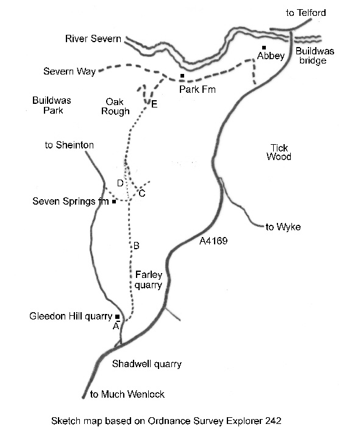

Exploring Telford
In the Footsteps of Bertram Baxter
by John Wooldridge
This page contents © John Wooldridge 2007
Gleedon Hill Tramroad, Shropshire

Exploring TelfordIn the Footsteps of Bertram Baxterby John WooldridgeThis page contents © John Wooldridge 2007Gleedon Hill Tramroad, Shropshire |
|
In the early 18th century Abraham Darby brought Wenlock stone for iron smelting in Coalbrookdale. As the local iron industry expanded, quarries between Much Wenlock and the River Severn were acquired by ironmasters operating in the southern part of the East Shropshire coalfield. The Wenlock-Buildwas road (now A4169) led to a wharf on the River Severn downstream (east) of Buildwas bridge from where stone was carried downriver to the ironworks. In 1780 William Ferriday of Lightmoor leased stone quarries near Gleedon hill and the Coalbrookdale Company leased quarries nearby. In 1800 William Reynolds leased quarries at Tickwood and Wyke. In the early 19th century the Madeley Wood Company succeeded to the Wenlock quarries of Richard and William Reynolds (probably the quarries at Tickwood and Wyke) and also to the Coalbrookdale Company quarries (probably near Gleedon Hill). The late 19th-century decline of Shropshire's iron industry curtailed demand for Wenlock stone and Gleedon Hill quarries closed between 1882 and 1901.
The first stone carrying railway may have been built some time after 1800 - the date when William Reynolds took a lease on quarries at Tickwood and Wyke - to transport stone north eastwards, probably to a Severnside wharf on the Buildwas-Benthall boundary (perhaps the area now occupied by Buildwas power station). This railway had gone by 1833 and I have found no other reference to it, nor indeed any trace of it on the ground. Between 1824 and 1833 the Madeley Wood Company built a railway north from Gleedon Hill to a Severnside wharf about 1½ kilometers upstream (west) of Buildwas bridge. In 1862, mainly to improve the transport of limestone to the Severn, and of coal from there to the kilns at Much Wenlock, a steam railway was opened from Buildwas to Much Wenlock (1).
The gazetteer of Bertram Baxter's Stone Blocks and Iron Rails says:
Gleedon Hill tramroad. Near Buildwas Park, south to quarries on Gleedon Hill. One and three quarter miles. No details. Traffic: stone. Route: part traceable.This must be the railway built by the Madeley Wood Company between 1824 and 1833. The Baxter Collection in Birmingham Central Library has a 6 inch map with the route drawn in pencil; the same route, marked Rail Road, appears on the 1933 O.S. One-Inch map. The Baxter Collection also has a photograph, taken by Baxter in 1956, showing a slight embankment across fields.
|
At A (G.R. SJ 623009), beside the minor road to Sheinton at the point where the tramroad entered Gleedon Hill quarry, there is space to park two cars. The quarry is long disused and quite overgrown; and in contrast with the nearby, modern, Shadwell and Farley quarries it is tiny. On the east of the road to Sheinton a public footpath enters a long, narrow strip of woodland. For the first three hundred metres, where the ground has been disturbed, the tramway was slightly to the east of the present footpath and the reason for the disturbance, Farley quarry, can be seen by scrambling up through the trees on the right and looking down into the deep excavations. (This part of Farley quarry seemed not to be in use in January 2008). At B a disused track from Farley quarry comes in from the east and, following the tramroad, continues gently downwards, always a few metres from the edge of the woodland. Just east of Seven Springs Farm the public footpath turns NE and after 150 metres, at C a farm track heads NW. In March 1973 I spoke with the Seven Springs Farm owner. He confirmed that the public footpath from Gleedon Hill quarry did follow the tramroad route. He said that the route then passed through two of his fields, D, before continuing as a farm track to pass east of Buildwas Park. He said that his plough sometimes threw up small stones which he believed were tramroad foundations. Some time previously he had found a length of L-shaped rail. The 1928 O.S. 6 inch map shows a path following the tramroad course through the two fields at D. Although Baxter's photograph contains insufficient detail to identify the location, it may have been taken somewhere here. But in January 2008, though the line can easily be projected, the arable fields show nothing. Northwards from |

Sketch map based on Ordnance Survey Explorer 242 | |